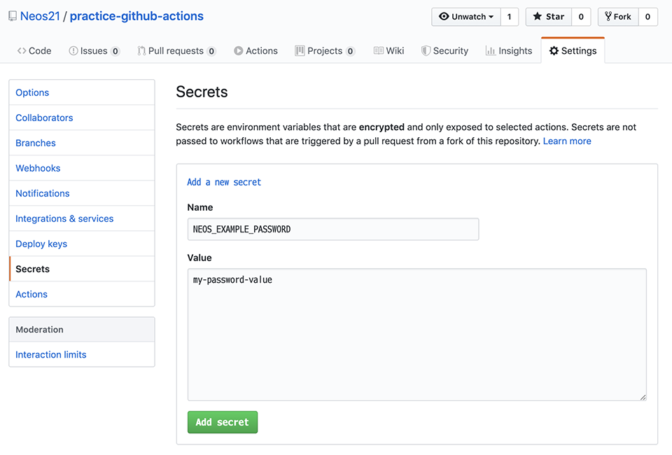
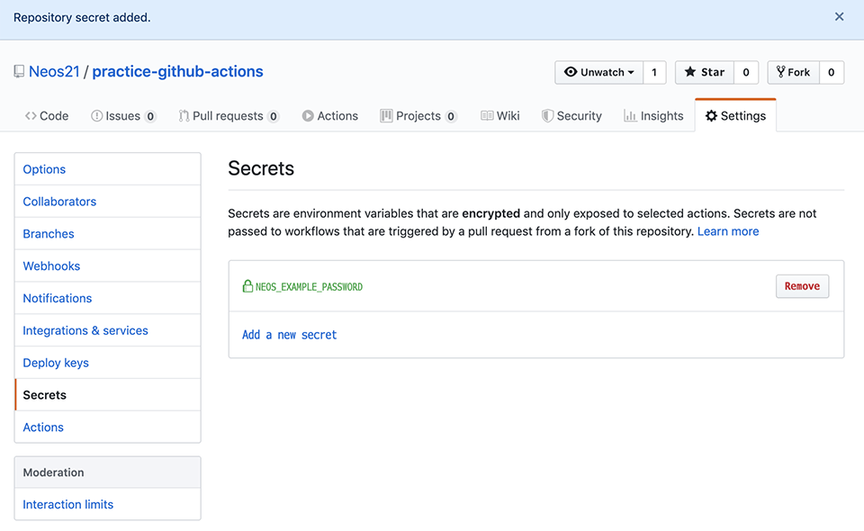

GitHub Actions を触ってみた
GitHub 上で CI/CD を実現できるコンテナ・パイプライン機能である GitHub Actions を使ってみた。
お試ししたリポジトリは以下。
目次
まずはテキトーに動かしてみる
使い方がよく分からないが、いきなり解説記事を読んでもやっぱりよく分からないので、試しに動かしてみる。
新規リポジトリを作り、「Actions」タブに移動する。

「Simple workflow」というサンプルっぽいヤツを試してみる。「Set up this workflow」ボタンを押す。
すると次のようなエディタ画面に移動する。自分で調べながらコメントを付け足してみた。

GitHub 画面上でこのファイルをコミットしてみると、早速ワークフローが動いた。トリガーとなるイベントを on: [push] と実装していたので、GitHub 画面上でコミットした場合は git push と同じ扱いになり、動作したというワケ。

ジョブを選択し、右端の3点リーダアイコン … から View raw logs を押下すると、詳細なログが見える。

見てみると、確かにワークフローで実装していた echo コマンドの動作が確認できた。
Secret : クレデンシャル情報を渡してみる
続いて、よくありそうな仕組みとして、アクセストークンやパスワードなどのクレデンシャル情報を別に定義しておいて、ジョブ内で使用するというモノだ。
GitHub 画面の「Settings」タブより「Secrets」メニューに進み、「Add a new secret」リンクを押してシークレットを追加する。
今回はサンプルとしてどうでもいい文字列を追加した。my-password-value が、パスワードとして使用する文字列の「テイ」だ。

追加するとこのような画面になる。一度追加したシークレットは、中身を参照したり変更したりできないので注意。値を変更したい場合は一度「Remove」してから同名で作成することになる。

このシークレットを、ワークフロー内のシェルスクリプトで利用してみる。シェルスクリプト内の環境変数として利用できるようにするには、env プロパティにてシークレットを渡しておく必要がある。
- name: Run a multi-line script
env:
NEOS_EXAMPLE_PASSWORD: ${{ secrets.NEOS_EXAMPLE_PASSWORD }}
run: |
echo "This is Secret : [ ${NEOS_EXAMPLE_PASSWORD} ]"
echo "${NEOS_EXAMPLE_PASSWORD}" > ./test.txt
cat ./test.txt
echo 'Finished'
ちょっとイジワルだが、シークレット情報を echo したり、ファイルに書き出して cat したりしてみる例だ。
コレをコミットして実行させてみたが、ログには一切パスワード文字列が出力されなかった。コレは安全である。
ちなみに、ワークフローの YAML ファイルに問題があったりすると、次のようにエラーとなる。

成功・失敗・実行中というステータスの他、「手動でジョブを中断 (Cancel)」ということもできる。

もう少し複雑な例として、Node.js スクリプトから、あるサーバに FTP 接続する、というスクリプトを作ってみた。
./.github/workflows/nodejs.yaml
name: Node CI
on: [push]
jobs:
build:
name: Node.js Job
runs-on: ubuntu-latest
steps:
- name: Checkout
uses: actions/checkout@v1
- name: Use Node.js v10
uses: actions/setup-node@v1
with:
node-version: '10.x'
- name: Run npm Scripts
env:
MY_FTP_PASS: ${{ secrets.MY_FTP_PASS }}
run: |
npm install
npm run ftp
package.json の scripts にて、npm run ftp が動作するよう npm-run-scripts を定義しておく。
{
"scripts": {
"ftp": "node ftp.js"
}
}
ftp.js 内の実装、promise-ftp という npm パッケージを使って FTP 接続するようにしている。シークレットで定義した MY_FTP_PASS を環境変数から読み取るため、次のように実装している。
const PromiseFtp = require('promise-ftp');
const promiseFtp = new PromiseFtp();
promiseFtp.connect({
user : 'example-user',
password: process.env.MY_FTP_PASS,
host : 'example.com'
})
.then((serverMessage) => {
console.log('★ Connected ', serverMessage);
});
Node.js は process.env.MY_FTP_PASS という風に書くことで環境変数を参照できるので、このように書いている。
コレを実行してみると、無事シークレット情報が渡されて正常動作したのだが、全角文字 (上のコードの ★ 部分) が文字化けしていた。
日本語のログ出力には対応していなさそうなので、注意が必要だ。
結構使えるやんけ！
以上がザッと使ってみた例。結構使えそうだ。
構文の勉強
もう少し使い方を調べるため、以下の公式の記事を見てみた。
最初はなかなかとっつきにくかったが、ひとしきりサンプルの Workflow や Action を使ってみた後に読むとよく分かった。
- ワークフロー (1ファイル・トリガーとなるイベントを定義できる単位) → ジョブ (ワークフロー内で行う処理の塊) → ステップ (ジョブ内の1つの処理) という関係
- ワークフローは複数作成できる。それぞれのワークフローに同じ
onイベントを指定しておくと、並列実行される - ジョブはデフォルトで並列実行されるが、
jobs.【Job ID】.needsで依存ジョブを指定すれば順序の制御もできるneeds: job1とかneeds: [job1, job2]とか書く
jobs.【Job ID】.runs-onは、そのジョブを実行するホスト環境- コレ自体も仮想環境ではあるが、イメージ的には Jenkins サーバみたいに、1つのジョブを実行するマシン1台、と捉えて良い。CPU や RAM などのスペックが一応公開されている
- 1つのジョブにつき1つのホスト環境を指定した上で、
jobs.【Job ID】.containerやjobs.【Job ID】.steps.usesでさらに Docker コンテナを指定したりできる runs-onで指定したデフォルト環境ではグローバルにコマンドが足りなかったりする時は、ジョブ単位やステップ単位で Docker コンテナないしは Actions を利用することで拡張できるイメージ
jobs.【Job ID】.steps.nameは省略できる- Action 1つは、1つの Step として実行することになる
- Action とは「再利用可能なコードの単位」。コマンドを提供する、もしくはコマンドを実行する Docker コンテナを指定する、ぐらいのイメージでいいかな
uses: docker://apline:3.8のように DockerHub のイメージを直接指定して使ったりもできる
jobs.【Job ID】.steps.runでシェルコマンドを実行できるshellプロパティで PowerShell やコマンドプロンプトなども設定できる (runs-onで指定した環境が Windows じゃないとダメ)- Windows マシンでも
shell: bashは動作する。GitBash が使用されるようだ
その他、構文に関しては以下の記事が参考になった。
他に何ができるの？の参考に
その他にどんなことができそうかは、具体的なコードを見た方がイメージが湧くと思うので、Qiita で色々記事を集めてみた。参考までに。
- GitHub Actions を用いて Pull-Request で shellcheck をする方法 - Qiita
- シェルスクリプトの Lint ツール
shellcheckは標準の Ubuntu 環境にプリインストール済
- シェルスクリプトの Lint ツール
- GitHub Actions v2 で Windows Driver Kit を使ったビルドをする - Qiita
- GitHub Actions は Azure Pipelines と同じイメージを使っているらしい
- Github Actions で GCPに向けてTerraform を実行する - Qiita
- HCL (JSON みたいな) 構文は廃止予定。今後は YAML で書く
hashicorp/terraform-github-actionsがterraformコマンドのサブコマンド単位で Actions を公開している
- Github Actions で Selenium を動かしてみる - Qiita
- GitHub 上に Visual Editor もあったようだが、古い話みたい
- 【GitHub Actions】CIを使って毎日自動でGitHubに草を生やそうｗｗｗ - Qiita
on.schedule.cronを使用した定期実行の例
- GitHub Actions を用いて issue が更新されたら LINE に通知する方法 - Qiita
on.issues.types: openedやon.issue_comment.types: createdをトリガーにした例envで指定する変数の値はベタ書きでも良い。env.URLはrunの中で${URL}として呼べる
- GitHub Actionsでキャッシュが使えるようになって嬉しい！ - Qiita
actions/cache@previewでキャッシュすることでnpm installなどの時間を短縮
- GitHub ActionsでAngularプロジェクトの自動テストを実行してみる - Qiita
actions/setup-node@v1でnpmを使えるようにする
- GitHub Actionsでキャッシュが使えるようになって嬉しい！ - Qiita
actions/setup-python@v1で Python・pipenv を使う例
- Flutter for WebとGitHub Actionsで自分のポートフォリオを自動デプロイする - Qiita
subosito/flutter-action@v1。これらの Action はグローバルなコマンドをインストールするためのモノと考えてもよさそう- その後の Step で
run: flutterのようにflutterコマンドが使えるようになっている
- GitHub Actions による GitHub Pages への自動デプロイ - Qiita
peaceiris/actions-gh-pages@v2.4.0で GitHub Pages にデプロイできるssh-keygenで鍵ペアを作り、Settings → Deploy Keys に公開鍵、Secrets に秘密鍵を登録すると使えるようになる
- GitHub ActionsでSSHを使う - Qiita
shimataro/ssh-key-action@v1で SSH 接続のフォロー
- GitHub Actions + Selenium でスクレイピングを定期実行 - Qiita
jobs.【Job ID】.servicesで、サービスとして動かす Docker コンテナ・プロセスを指定できる- この記事の例では Selenium をサービスとして動かしている
- Github Actions+AppiumでAndroid Emulatorを動かす - Qiita
- Appium・Android エミュレータも動作する
- Github Actions で Xcode プロジェクトをビルドしてみる - Qiita
- Xcode ビルド・iOS シミュレータも動作する
- GitHub Actions で Windows IE11 と Mac Safari を selenium-webdriver で動かす - Qiita
- GitHub Actions の matrix と cache 使ってe2eワークフローを作る - Qiita
- Windows・MacOS を使っている例
- GitHub Actions でステータスバッジを表示する - Qiita
- ステータスバッジの付け方
- Solved: GitHub Actions Manual Trigger / Approvals - GitHub Community Forum
- GitHub Actions を手動で実行するには？ → 「手動実行」のための機能はないらしい
- `on: repositorydispatch`_ イベントを指定しておき、GitHub API を叩くと実行できるが、ブランチ指定はできず最終コミットが利用される
- GitHubActionsの
repository_dispatchを試す - Qiita - GitHub Ationsで任意のタイミングでトリガーを発火させる - notebook
- GitHub - SamKirkland/FTP-Deploy-Action: Deploys a GitHub project to a FTP server using GitHub actions
- FTP デプロイを行えるアクション
以上
実行基盤に Ubuntu だけでなく、Windows と MacOS も使えるようなので、クロスブラウザテストや iOS アプリのテストなんかもできそうだ。
無料でガンガン使えるので、どんどん活用していこうと思う。